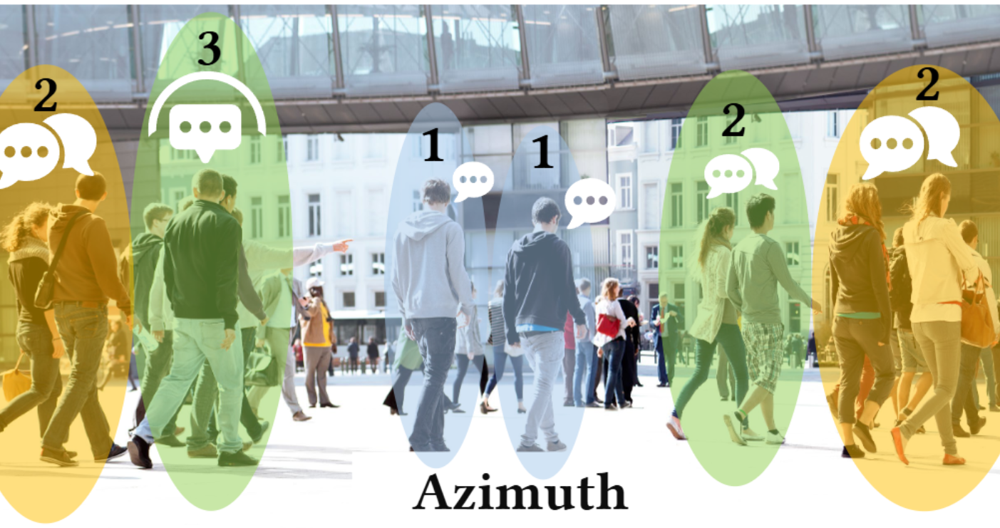
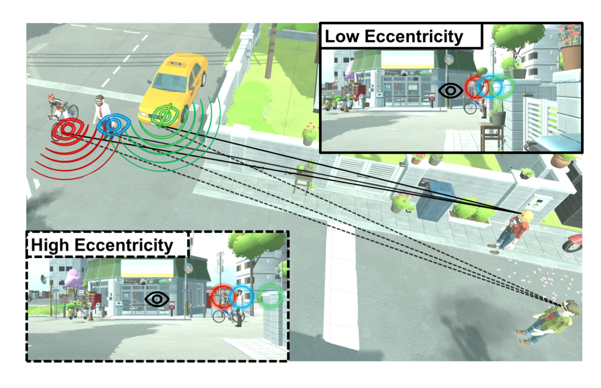

I am a first year Ph.D. student at UNC Chapel Hill advised by Prof. Praneeth Chakravarthula. In my master's study at NYU, I was fortunately working at NYU Immersive Computing Lab advised by Prof. Qi Sun. My current research revolves around VR/AR, perceptual computer graphics, computational imaging, and machine learning.


, Kenneth Chen, Iran Roman, Juan Pablo Bello, Qi Sun*, Praneeth Chakravarthula*
IEEE VR 2025
Guansen Tong*, Jonathan Leung*, , Haosheng Shi, Liujie Zheng, Shengze Wang, Arryn Carlos O'Brien, Ashley Paula-Ann Neall, Grace Fei, Martim Gaspar, Praneeth Chakravarthula
TVCG 2025 IEEE VR Best Paper Honorable Mention

, Yunxiang Zhang, Daniel Jiménez Navarro, Ana Serrano, Karol Myszkowski, Qi Sun
TVCG 2024

Daniel Jiménez Navarro, , Yunxiang Zhang, Karol Myszkowski, Hans-Peter Seidel, Qi Sun, Ana Serrano
SIGGRAPH 2024
Fengze Zhang*, Yunxiang Zhang*, , Sky Achitoff, Paul M. Torrens, Qi Sun
ISMAR 2024
Conference Reviewer: SIGGRAPHISMAR